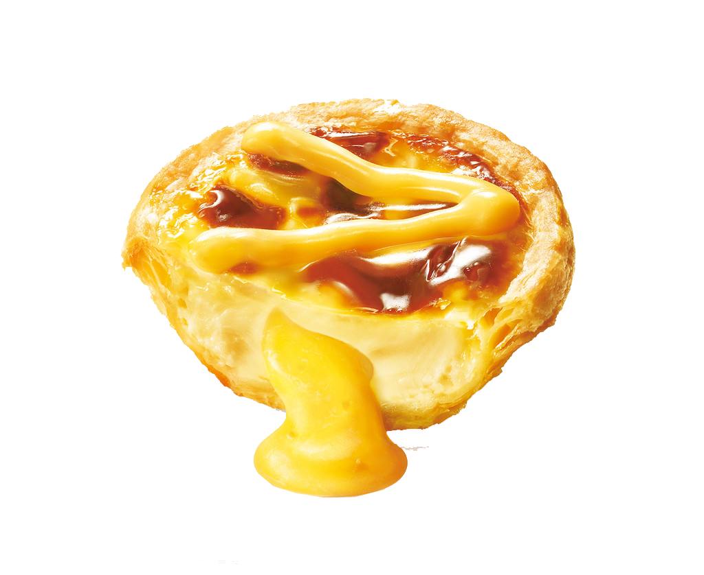
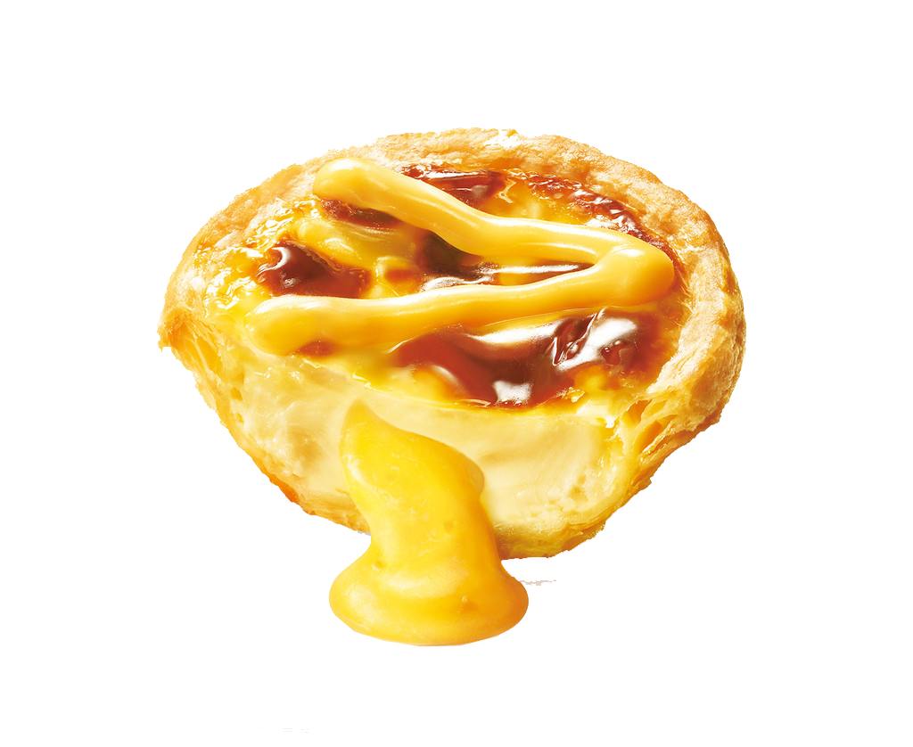
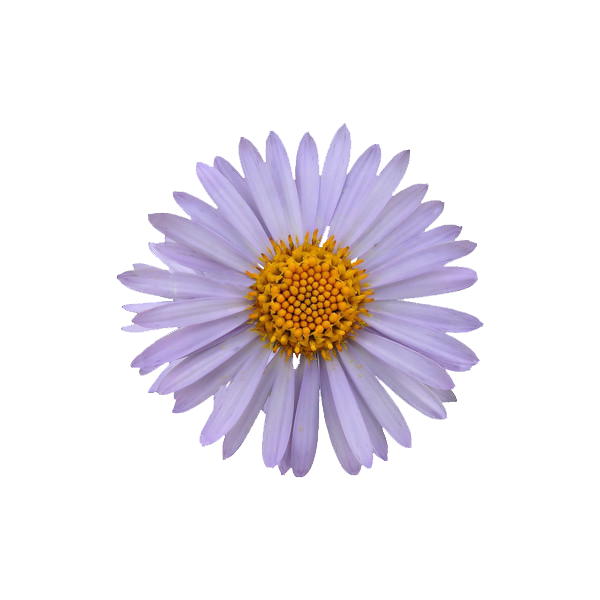

I'm Bảo Hòa. A newbie Frontend Developer in Viet Nam.
You are about to tour around Dalat - my sweethometown - through the Lens of a Dalat-er.
What's Special about Dalat?
City of
 &
&
 mooners
mooners
Dalat’s specific sights are pine forest (forming the name: “City of thousands of pine trees”) with twisting roads and tree marigold, cherry blossom in the winter.
It’s also called “Little Paris” (“Le Petit Paris” in French) due to its French architecture villas and its replica of the Eiffel Tower built by the Telephone Company that looks like it fell into a pool of red and white colour.
Beside above names, Vietnamese also called Da Lat under many lovely names such as The City of Love, The City of Poetry, The Green City…

Beau ful
ful
With so many hills, mountains and forests, every inch here is beautifully unique.
Many coffee shops have made the most of this landscape and turned themselves into fantastic viewpoints for travellers, such as Cà Phê Mê Linh, Horizon Coffee, and Café Panorama. Langbiang Peak at 2,167 metres is another good place to take in the majestic mountainous scenery.
Tempeture
Speaking of what makes Da Lat different from other places in Vietnam, almost instantly one would think of the weather.
Đà Lạt enjoys cool breezes all year round, regardless of the season, while elsewhere the temperature may reach 40 degrees in the summer. That alone is enough to set Đà Lạt apart.
F d
d
Today, the best Da Lat dishes are made with fresh produce and meats that are sourced from the farms surrounding the hill town.
The city is blessed with fertile land and a cool highlands climate, so just about anything can be grown here. Some of the best ingredients in Vietnam can be found in Da Lat, such as avocados, strawberries, asparagus, artichokes, grapes, tea, coffee, flowers and wild mountain mushrooms.
2-2
Aster amellus
Da Lat is where I met and fall in love with Her. She said that our wedding party will be full of blue flowers and decorations.